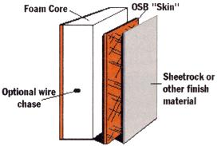
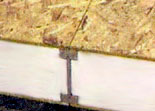

Although foam core paneling has been around for years, the Department of Energy (DOE) recently teamed up with Champion Enterprises to construct the first manufactured home built entirely from such energy-saving materials. The building material is manufactured by sandwiching recycled polystyrene foam between two layers of oriented strand board (OSB), applying heat and pressure, then cutting them to any size needed. The panels are highly insulated and energy-efficient.
"The reason why it works better than two by fours or stick framing is because there are very few seams and gaps in the walls compared to stick framing," explains Michael Lamb, certified energy manager at the Energy Efficiency and Renewable Energy Clearinghouse, a division of the DOE.
In stick-frame houses, Lamb explains, air can blow into the wall cavities, whereas with Structural Insulated Panels (SIPs) - another name for foam core panels - there are fewer seams and leaks, and the insulation quality of the wall is very uniform. Lamb also points out that while SIP construction is slightly more costly to produce than traditional construction - prices range from $2.50 to $4 per square foot - homebuilders can balance out building costs by saving on labor and energy bills.
The advantages to foam panels are attracting builders such as Hart Housing and FischerSIPs, Inc., which sell SIP houses.
-Cindy Klinger
|
 |
 |
|